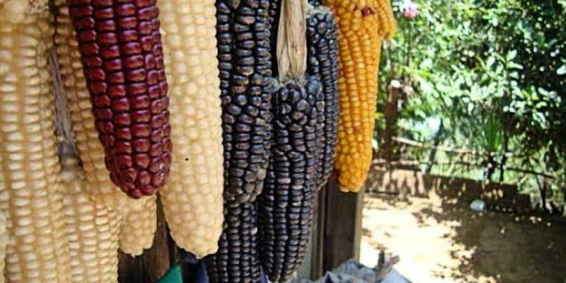

Maíz
El maiz es uno de los ingredientes fundamentales en la cocina guatemalteca: el maíz. Este grano versátil y nutritivo es un pilar de la dieta y la cultura culinaria de Guatemala, y en nuestra tienda de ingredientes autóctonos, te ofrecemos la mejor calidad de maíz para que puedas disfrutar de la auténtica experiencia gastronómica guatemalteca en la comodidad de tu hogar.
En nuestra tienda, encontrarás una variedad de tipos de maíz, desde el maíz blanco tradicionalmente utilizado en la preparación de tortillas y tamales, hasta el maíz morado, que se utiliza en la preparación de bebidas y postres tradicionales. También ofrecemos maíz amarillo, perfecto para la elaboración de platos como el atol de elote, una deliciosa bebida caliente a base de maíz y leche.
está disponible la libra por tan solo Q4.00
